Charters & coin
Humans
Fund wages and grant a proven captain rights with duties attached. A charter can outlast the ruler who wrote it.

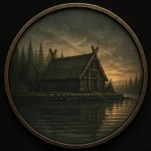
A fantasy kingdom simulation
You rule. They decide.
Found a settlement in a seeded fantasy world and rule it from the hall. Set the wages, post the bounties, write the charters. Your people choose whose work is worth taking.
How you rule
You never pick up a hammer or march a soldier. You hold the purse, the law and the bounty board. The rest is up to them.
Set wages and fund the hall’s institutions each season. Jobs that pay get done. Jobs that don’t sit waiting, and tell you why.
Need a bridge, a cleared den or a hunt? Post a bounty or grant a charter, and see who steps forward to claim it.
Residents eat, earn, save, rest and raise families. When they die, their kin inherit. The realm keeps going without you.
From the hall
The timber is on the far bank and winter is a season away. A bridge needs a site, supplies, and workers willing to take the job. Set aside the wages, post the work, and see who answers in time.
The realm
Each people has its own land, palette and court. These screens are from the painted interface prototype.
The peoples
Four playable peoples and eighteen subfactions are planned for the alpha. Each divides the work, settles debts and goes to war in its own way.
Charters & coin
Fund wages and grant a proven captain rights with duties attached. A charter can outlast the ruler who wrote it.
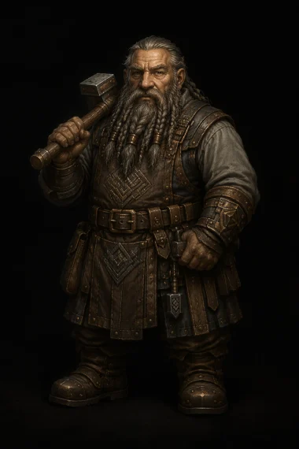
Covenants & craft
A master can work the bench, teach an apprentice or serve the hold. Every hour given to one comes out of the others.
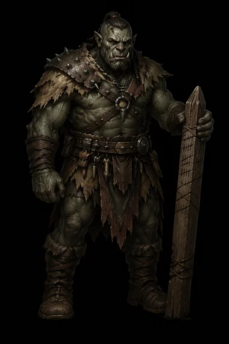
The Hearth & its shares
Everyone eats at the founding fire. Divide the shares in public and issue Calls for work, rescue or war.

Pacts & the binding ledger
Rule pact households from a Gothic refuge. The court lives on blood given by consent, and its host is mostly raised dead.
From the game’s art
Human buildings and villagers as the game draws them: lit windows, worn stone and the trade on show at every door.
 Founding hall
Founding hall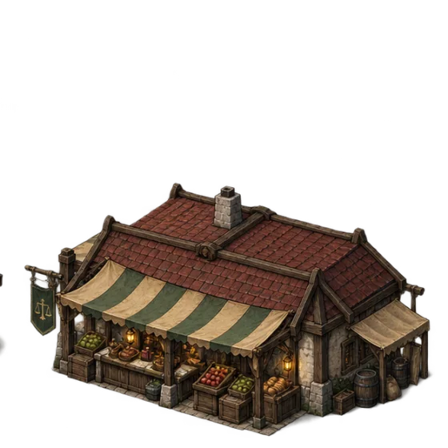
Market exchange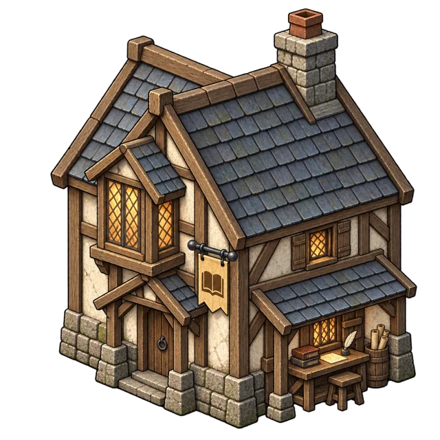
Scriptorium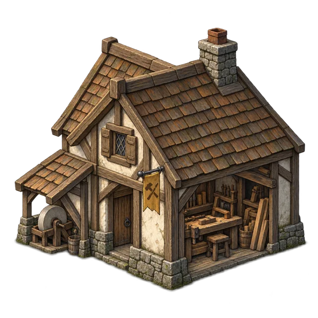
Artisans’ lodge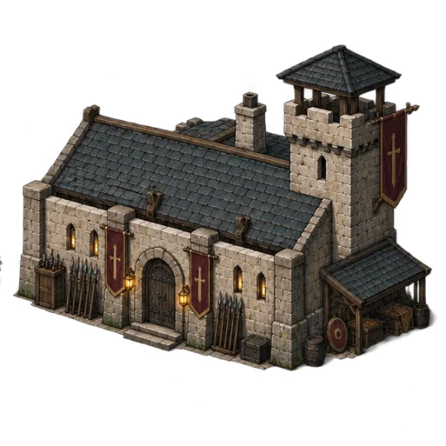
Muster hall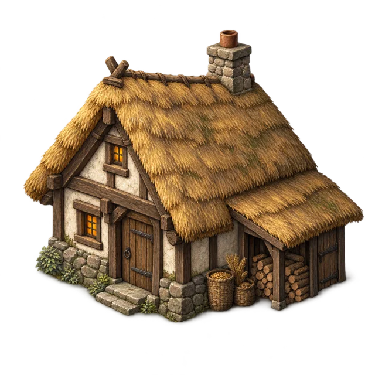
Cottage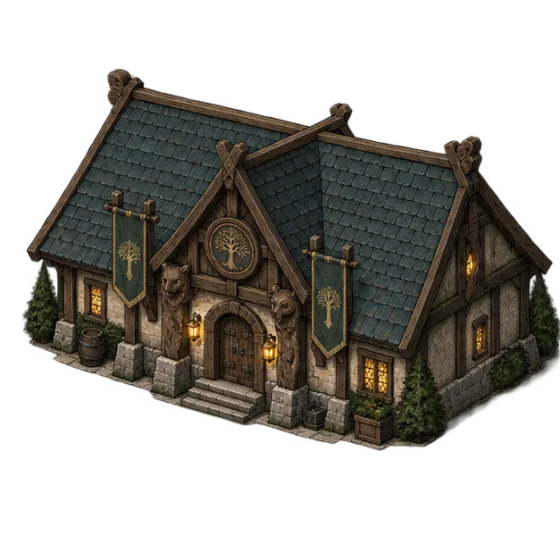
Fellowship hall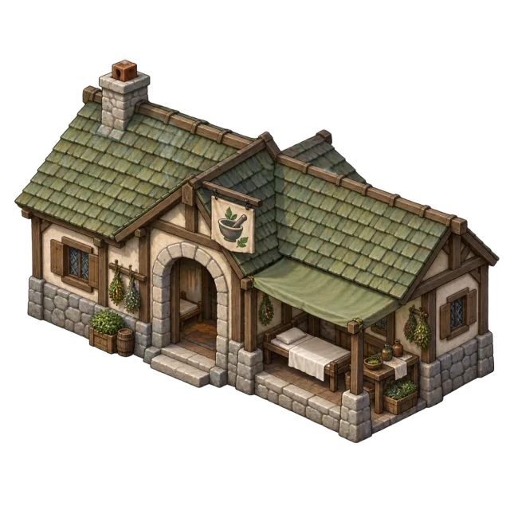
Infirmary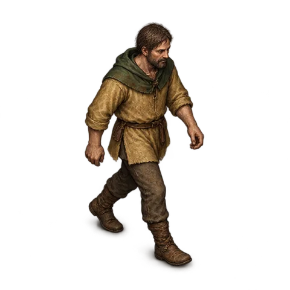
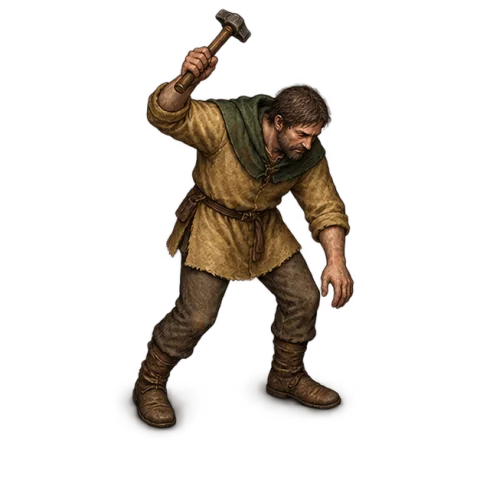
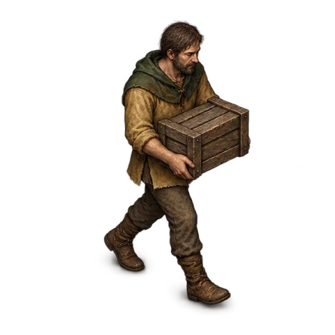
Villagers carry the work themselves: walking the roads, raising the walls, hauling the goods.
Concept art
Orc design studies: a smith at the forge, a roadmaker with a pick, the ring where shares are divided.

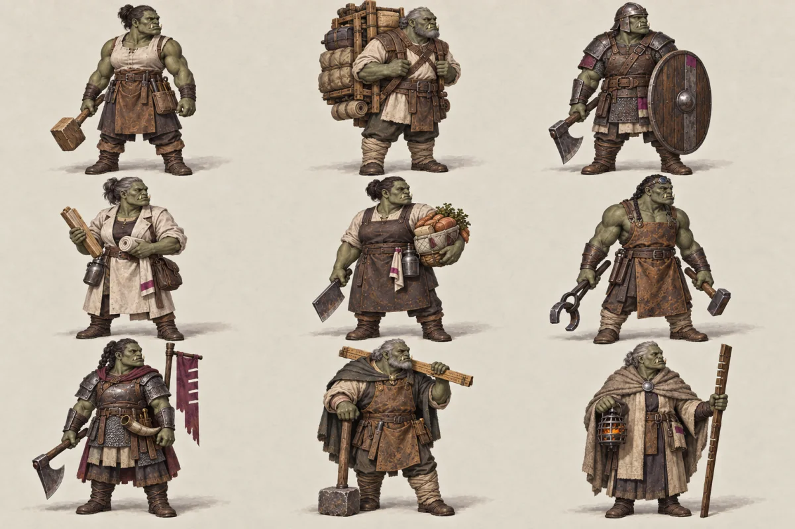
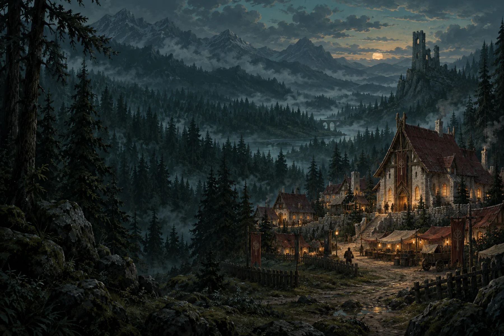
Platforms
Offline and single-player. Release date to be announced.